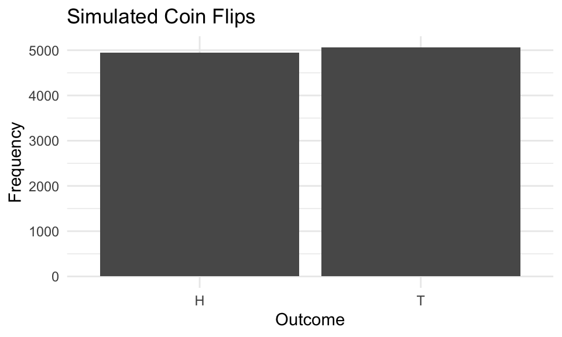
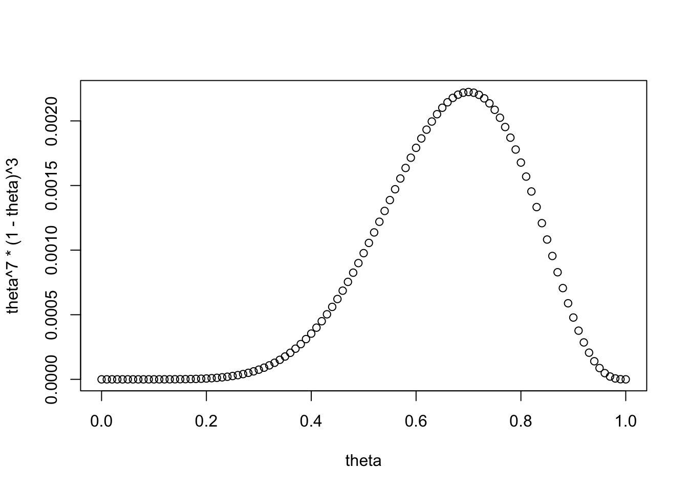

Chapter 2 Introduction
2.1 The Logic of Inference
This class involves much more than finding a model that is appropriate for a given data structure. In fact, we will continually be returning to two themes in inferential statistics, the frequentist and *Bayesian traditions. In some circumstances, these two traditions will yield very similar results, though the interpretations vary. During these first two weeks, we’ll consider these two perspectives from a theoretical vantage; throughout the rest of the term, we’ll review techniques to use these perspectives in inference.
It’s worthwhile to understand the motivating principles of these two approaches, prior to digging into technical content. Most likely, many of you have received training in the frequentist tradition of probability, which is often credited to Jerzy Neyman, Karl Pearson and Sir Ronald Fisher. The logic here is quite simple: Probability refers to the frequency of an event occurring in a series of trials.
Frequentism is actually quite intuitive when applied to circumstances in which we can observe repeated trials. If you flip a coin, the probability of observing heads is 0.5. What does that mean? Flip the coin 10000 times and you should expect to observe heads 5000 times.
Or consider the classic example of rolling a die. The probability of rolling a 1 (or any number, with a fair die) is 1/6. This number is of limited value in predicting the outcome of a single roll. Instead, what it means is that in a series of trials, approximately 1/6 of those trials will yield a 1. We could ask a variant of a classic game of chance question, which is if we have 10 trials, and each trial involves rolling two dice,is it beneficial to bet that at least one of those trials will yield two 1’s (see https://en.wikipedia.org/wiki/Problem_of_points)? The probability of observing two ones is 1/6 \(\times\) 1/6 \(=\) 1/36. This implies that the rest of the sample space (i.e., not rolling two ones) is 35/36. Since the rolls are independent, then the probability that two ones are not observed in 10 trials is \((35/36)^{10}=0.75\) – thus one should probably bet on “snake eyes.”
# Load necessary library
library(ggplot2)
# Always set seed for reproducibility
set.seed(123)
# Simulate draws
n_draws <- 10000
outcomes <- sample(c("H", "T"), size = n_draws, replace = TRUE, prob = c(0.5, 0.5))
# Create a data frame for plotting
df <- data.frame(Outcome = outcomes)
# Plot the results
ggplot(df, aes(x = Outcome)) +
geom_bar() +
labs(title = "Simulated Coin Flips", x = "Outcome", y = "Frequency") +
theme_minimal()
## [1] "Of 10000 draws 4943 were heads! "Be sure to set set.seed(10000) to ensure reproducibility.
Statistics is often taught from this perspective – even if not always clearly acknowledge. For instance, a confidence interval is not a statement of certainty regarding whether the derived interval contains the true population value. You were likely instructed, early on, that statements such as “there’s a 95% chance the mean falls between
In fact, the very logic of inference hinges on the notion of drawing a subset of the population (a sample) and making an inference about the general population from that sample. Yet, the frequentist approach forces us to think of the population parameter as fixed – we simply don’t have it because it would be expensive to collect – and the methods we use to make inferences nearly always hinge on this notion of taking repeated samples from a population. Just recall the central limit theore, the standard error, confidence intervals, p-values, and Type I and Type II errors. These concepts all rely on the notion of repeated observation; hence, the frequentist’’ label. Let’s take a step back and consider what this means from the perspective of social science and sampling. Then, I think you’ll see what I mean when I use the term frequentist.
A Step Back
In this class, and really in most everything you’ve worked on, the focus of the research is rarely on individual observations but rather distributions. We can summarize data, and relationships between variables, based on distributions. For example, recall that in linear regression, one of the assumptions is the error process follows a parametric distribution (often the normal distribution). Moreoever, if we have a dependent variable that is clearly not normal and continuous, then this assumption becomes tenuous.
Recall the differences between a probability density function (PDF) and a continuous density function (CDF). A PDF gives the probability of an occurence (for a discrete variable) or a range of occurences (for a continous variable).
Notation
A CDF is written as F(x), or capital greek notation, e.g., \(\Gamma(x)\).
A PDF is written in lower case font, f(x), and we can find any area under a PDF by summation (for categorical data), and integration (for continuous data). That is,
\[p(a<x<b)=\sum_i^{K} x_i\]
\[p(a<x<b)=\int f(x) dx\]
As such, \(F(\infty)=1\), and \(F(-\infty)=0\), and \(p(-\infty < x < \infty)=\int_{-\infty}^{\infty}f(x)dx=1\). This is an important principle, which occasionally is forgotten. The sum of the total under a probability distribution (continuous variable) or probability mass (discrete variable) must be 1. We can plot a distribution across \(x\) that displays the probabilities across values of \(x\). For a discrete distribution, the \(y\) axis represents the probability of observing discrete outcome \(x\); for a continuous outcome, the \(y\) axis represents a ratio, which is the probability of observing \(x\) within an (infinitesimally small) interval divided by the width of that interval. This “density” need not be 1 – in fact, it’s often not – rather, the area under that distribution must be 1. Kruschke (2011) uses a nice analogy. Consider a sponge. The mass of the sponge represents the probability. Density is \(mass/volume\). If we squeeze the sponge, the mass doesn’t change, though it’s density clearly does. Here, volume, is simply the range of \(x\).
We should also be clear about notation. Oftentimes, we deal with two variables, \(x\) and \(y\). We’ll often refer to things such as “What is the probability of observing \(x\) averaged, or marginalized, across \(y\)?”
This is relatively easy to envision in a 2x2 table, in which we sum across rows or columns. The appropriate operation is then:
\[p(x)=\sum_y p(x_i, y_i) \hspace{0.5in} \texttt{Marginal Probability}\]
Note, this only applies to a categorical distribution. Though, as we’ll see, the continuous version is really just an extension of this.
Distributions are also used to describe continuous variables. In fact, much of the applications in this class will assume a continous distribution, even if we only observe a discrete response option. In your first semester statistics course, you reviewed the properties of a variety of continuous distributions – I assume, the normal, poisson, student’s t, F, and so forth. One can use univariate calculus – integration, in particular – to calculate various areas under the curve. If this is foreign to you, because you forgot it or didn’t quite grasp the concept from your first semester class, I strongly recommend you go back and review this material. We cannot spend much time on reviewing the basics of integration, and we will use it frequently in this class. Back to the issue at hand. For a continuous bivariate density, then
\[p(x)=\int p(x, y) dy \hspace{0.5in} \texttt{Marginal Probability}\]
Notice here the only difference is the \(\int\) instead of \(\sum\). But, it’s useful to think of them as calling for the same thing. Then the \(dy\) simply means “averaged across y.” Sometimes we say that this operation entails integrating out y, or averaging across y.
There are also conditional probabilities; these are not the same as marginal probabilities. For instance, we might ask, ``what is the probability that a wrestler has died, given he/she is 35-40?’’ So, \(p(X=(death) | Y=35-40)\). The conditional probability is always,
\[p(x|y)=p(x,y)/p(y)\hspace{0.5in} \texttt{Conditional Probability}\]
where, \(p(x)=\sum_y p(x, y)\) or \(p(x)=\int p(x, y) dy\). In other words, we are taking the joint probability of two things happening, here \(p(x,y)\), and dividing the joint probability by the marginal probability of observing y, \(p(y)\). Think of it as the joint probability weighted by the marginal probability.
And, finally, we will almost always assume independence, such that the probability of one outcome does not depend on the probability of a second outcome. In a bivariate distribution, this means
\[p(x,y)=p(x) p(y) \hspace{0.5in} \texttt{Independence}\]
This is actually quite intuitive if you think about it. If \(p(x)\) and \(p(y)\) are entirely unrelated – knowing one does not help you know the other – then the probability of observing the two events is simply the product. If I flip a coin from 1989 and one from 1977, the flips are independent. Knowing the outcome of the 1989 coin flip is inconsequential for the outcome of the 1977 coin flip. By extension, if two events are independent, then the conditional probability \(p(x|y)=p(x)\). Think briefly about what this means in context of the coin flip. Given that the Canadian coins is head, what is the probability that the 1989 coin is heads?
We can extend these ideas further, leveraging these three basic principles to what is known as Bayes’ Rule, named after the mathematician Reverand Thomas Bayes.
2.2 Conditional Probabilities, Continued: Bayes’ Rule
Consider the probability of observing \(x\) given \(y\). This probability can be expressed as the joint probability of observing \(x\) and \(y\) divided by the marginal probability of observing \(y\). That is,
\[p(x|y)=p(x,y)/p(y)\]
We can just rearrange things to find \(p(y|x)\). First multiply the equation by \(p(y)\)
\[p(x|y) p(y)=p(x,y) \]
But, remember, we can find the joint probability, \(p(x,y)\) as
\[p(y|x) p(x)=p(y,x) \]
Meaning,
\[p(x|y) p(y)=p(y|x) p(x)\]
Bayes’ Rule is simply,
\[p(y|x) =[p(x|y) p(y)]/p(x)\]
Notice, that we could simply solve this by inverting the rows and columns in the above example.
We’ll rely heavily on this basic principle, extending it in a number of interesting ways. For now, it’s more than sufficient to simply understand that Bayes’ Rule is really just a reordering of what we know about conditional probabilities.
Why p(y|x) is important – but misunderstood
The Monty Hall Experiment comes from the classic game show, “Let’s Make a Deal.” Here’s how it goes. There are three doors. Behind one door is a substantial prize – a car – behind the others are goats (undesirable prizes).
The contestant chooses one of three doors, but doesn’t open it. The host then chooses a door – obviously not the one with a car – opens it, revealing a goat. The contestant offers the option of staying with their original choice, or switching doors.
Should the contestant stick with the original choice or switch to the unopened door?
To begin – and knowing nothing else –
\[ P(Car, A) = P(Car, B) = P(Car, C)=1/3\] Let’s just assume you pick Door A. This makes sense – why have a preference for a particular door, if each is equally likely to contain the car? So, Monte Hall then opens Door B, revealing a gaot.
Firstly, you want to know the probability that Monty opened door B given the car is behind door A. Since you chose door A, Monty could have opened either door B or door C.
Let’s break down the problem. The probability that Monte Hall opens Door B given the car is behind Door A is 0.5. Remember, Monty is responding to your choice. You choose A, so he can open either B or C, and will always pick one with the goat.
\[ P(OpenB | Car, A) = 1/2\]
We know even more though. What is the probability that Monty Hall opened door B given the car is behind door B? It’s zero! Monty will never reveal the door with the car, as that would just mean giving away a car, absent any real contestant participation.
\[ P(OpenB | Car, B) = 0\]
The last probability to consider is the probability that Monty opened door B given the car is behind door C.
\[ P(OpenB | Car, C) = 1 \]
This is 1 for a simple reason. If you choose A, and he knows the car is behind C, he will always open B.
Prepared with this, let’s invert the problem.
\[p(Car,A|OpenB)?\] \[p(Car,B|OpenB)?\]? \[p(Car,C|OpenB)?\]
\[p(Car,A|OpenB) = {{1/3 * 1/2}\over{1/3*1/2+ 1/3*0 + 1/3*1}} = 1/3\]
\[p(Car,B|OpenB) = {{1/3 * 0}\over{1/3*1/2+ 1/3*0 + 1/3*1}} = 0\]
\[p(Car,C|OpenB) = {{1/3 * 1}\over{1/3*1/2+ 1/3*0 + 1/3*1}} = 2/3\] Don’t worry if you got it wrong. I did – I still find myself inclined to mistrust the result, though it is correct. It was the focus of famous Parade Magazine article, it’s been discussed in the New York Times, statisticians have debated the question, and it was the topic of a MythBusters television episode. By far the most common result is to say it doesn’t matter if you switch doors, acknowledging that the car resides behind Door A and B is equal, 0.5. This of course, is incorrect, which we can see with the application of Bayes’ Theorem.
2.3 Two Traditions
We will rely on probability densities a lot in this class. There are a variety of ways to describe, or summarize a distribution of data (or a theoretical distribution). Much of this class focuses on probability. Chapters 2 and 3 in King (1998) are also good references.
In statistics, we often (indirectly) use probabilities in the relativistic sense. We think of it as trials or experiments that are repeatable, aka the frequentist interpretation. For instance, the estimate of a particular candidate winning the nomination may be 0.55. If we were able to conduct a primary election over and over and over again, in the long run, we are assuming the candidate wins 55 out of 100 times. On any given trial though, they’ll either win or lose, just as you’ll only win or lose if you play a game of chance.
It’s well established in the psychology literature that humans are not great at processing probabilities. Our attention is drawn to emotionally evocative events – evident in the so called “availability heuristic,” and humans don’t accurately process base rates, the “accessibility heuristic.” For instance, shortly after the September 11 attacks, many Americans chose to drive rather than fly, despite the fact that driving was still far more dangerous – in terms of fatalities – than flying. Thee probability of dying in a terrorist attack in the U.S. has always been far less than dying in an automobile accurate.
In the social sciences in particular, we use probability in a subjective sense, by referring to the probability as a statement of certainty. While not inherently inaccurate, certainty means something different in the frequentist tradition, where parameters are fixed and we sample from a population.
When we fit a model – perhaps by minimizing the sum of squared residuals – we are generating a statement about the ability of our data being produced by a particular model, \(p(Y|M)\). This is essentially what we do when we compare model fit, examining how the overall model changes in its predictive power. The problem is we may be inclined to make a statement about the model given the data. What is the probability, for instance, that a parameter falls in a particular range? But this requires a bit more information.
\[p(M|D) =[p(D|M) p(M)]/p(D)\]
The inverse probability is then a function of the likelihood, as well as the probability of observing the model the probability of observing the data. It turns out that since the denominator is a normalizing constant, which renders the numerator into a valid probability, it is proportional to the product absent \(p(D)\).
\[p(M|D) = p(D|M) p(M)/p(D)\]
\[p(M|D) \propto p(D|M) p(M)/p(D) \]
What this establishes is these two principles: Frequentism versus Bayesian inference. Typically, we’re interested in the Bayesian version of the probability statement – “what is the probability that our data produced a model?” The frequentist version, which draws on what is called the likelihood, really posits something different, and that is, “what is the probability that a model produced our data?”
At this point, it’s worthwhile to use an example. We’ll use the principle of maximum likelihood first, since the likelihood equation is part of Bayes’ Rule (do you see why?). Then, we’ll apply it to Bayesian statistics. We’ll also start really, really simple example, with a single parameter: The case of flipping a coin.
2.3.1 An Example: Bernoulli Trials
We’re going to operate from the assumption that a coin is fair, which simply means the probability of observing an H is the same as the probability of observing T. In this case, \(y \in [0 , 1]\). And let’s just say that:
\[y = {1, H, \theta=0.5}\atop {y=0, T, 1-\theta=0.5} \]
So, we’re just labeling heads 1, tails 0. Each has an equal probability. Let’s call this population parameter governing the behavior of the coin, \(\theta\). This isn’t a trivial assumption – it’s central to frequentist inference – the parameter is fixed. The assumption is it exists, and governs the behavior the coin. Because we know what \(\theta\) is, by assuming the coin is fair, it is easy to find the probability of observing a particular string of heads, tails, or some combination.
Let’s also assume independent trials. What this means is one trial is independent of a subsequent trial. Then the joint probability of observing a (H,H) is simply \(0.5 \times 0.5=0.25\).But, perhaps we have some reason to expect the coin is not fair, and \(\theta=0.3\) (the coin is biased in favor of T). Then, the probability of observing a H,H,T is \(0.3 \times 0.3 \times 0.7\)}. Recall from the previous section we could simply express these independent coin flips in a formal expression, as
\[p(heads)=\theta^y(1-\theta)^{1-y}\]
And, across \(n\) independent trials trials,
\[p(k)=\prod\theta^y_i(1-\theta)^{1-y_i}\] \[=\theta^k(1-\theta)^{n-k}\]
Since \(\textbf{y}=y_1, y_2...y_n\) is observed and we are making an assumption about the constituent probabilties, all we need to do is multiply the probability of each outcome, here denoted by \(\prod\)
Likewise, we could just use the binomial distribution to calculate this probability (call \(K\) an observed sequence).
$$p(K | \theta, N)= {n \choose k} \theta^K(1-\theta)^{N-K}$$
Turn the question on it’s head (sorry). We’ve assumed that \(\theta\) is known, allowing us to generate a valid probability distribution for some observed sequence. However, \(\theta\) – the statistical parameter – is usual what we want to estimate. It exists in the population, but it is not directly accessible. However, we assume it could accessed, if we had resources to access the total population – like a census. Of course, we rarely can access the whole population – if we could, what would be the point of inference – and instead we make an inference about this parameter. It’s perhaps easiest to consider with coin flips. For a given coin, we assume \(\theta\). If we approach the trials with an assumption of a fair coin, we simply posit that \(\theta=0.5\). But, what if we are not able to generate such a concrete assumption about \(\theta\)?
Instead, suppose we only have access to an observed series coin flips. Instead of approaching the problem from the issue of, What is the probability of observing two heads in a series of 10 flips, given a fair coin? we might ask, “Given 2 observed heads out of 10, what is the most probable value of \(\theta\)”? Or, “Is the coin fair?” It shouldn’t take much convincing that this is a qualitatively different question. It’s also the question we commonly ask ourselves in applied research. In particular, Given the data available, what is the most likely parameter or set of parameters to generate the data? In this case, “parameter” may be an estimate about how many people will vote for a candidate, a slope coefficient, and so forth. An alternate way to think of this is \(p(D|M)\) – or what is the probability of observing the data, given the model (King 1998).
Although you may not have seen this notation yet, all our statistic models assume we want to maximize the likelihood that an estimated population value produced a dataset, called \(D\), so \(p(D | \theta)\). This is also why I’ve been following this convention. Consider the logic of minimizing the sum of squared errors. If \(\theta\) simply represent a vector of slope coefficients, recall that the logic of OLS is to minimize the squared discrepancy between the observed and predicted values. Though we can estimate an infinite number of \(\theta\) values, only one will meet the criterion of minimizing the sum of squared residuals. This is equivalent to asking ourselves, ``what is a set of \(\theta\) values that maximizes the likelihood of observing a particular dataset?’’ in that finding \(\theta\) that minimizes the sum-of-squared residuals will also maximize the probability of observing a particular dataset.
This is the logic underlying a technique that we will use throughout this semester, which is called “maximum likelihood.” In the linear model, the maximum likelihood estimator and the OLS estimator will yield the same results; yet, the logic of minimizing SSR is not applicable to many other data situations (e.g., a binary dependent variable). Thus, we may use the logic of ML to estimate a variety of models.
Returning to the motivating example: What is \(\theta\) in a series of coin flips. Maximum likelihood is a technique to estimate parameters in a model, not unlike the principle of least squares. The logic – and not so much math – is as follows. Let’s call \(\theta\) some set of parameter estimates and \(D=(y_1....y_n)^T\) is the observed data. The probability of observing vector, \(D|\theta\) is simply the product of all individual values of \(y_i | \theta\), if values are independently observed. Thus, the probability of observing H,H,T with a fair coin is simply \(0.5 \times 0.5 \times 0.5\).
2.4 Simulation and the Likelihood Function
Assume we observe 7 heads, 3 tails. What’s our best guess of theta?
## [1] "Possible value: 0 ..." "Possible value: 0.01 ..."
## [3] "Possible value: 0.02 ..." "Possible value: 0.03 ..."
## [5] "Possible value: 0.04 ..." "Possible value: 0.05 ..."## Assume we observe 7 heads, 3 tails. What's our best guess?
##
## 
## The maximum value of the distribution is: 0.7Instead of having a known probability, we can work the other direction and calculate the most likely value for \(\theta\) given an observed data set. To keep things tractable, assume 10 flips, and we observe 7 heads. That is, \(L(\theta | \sum y_i=7, N=10)\) – we may generate a value for \(\theta\) that maximizes the probability of observing 7/10 heads.
Formally, \[L(\theta)=\Pi p(y_i | \theta)\].
Thus, the likelihood equation is the probability of observing \(y\) given some best guess of \(\theta\). Below, we’ll very briefly develop a few techniques to formulate this guess
We’ve now observed the data, and instead of knowing \(\theta\), we can estimate the most plausible value of \(\theta\), considering our data. If we flip a coin ten times and observe seven heads, what is a value of \(\theta\) that is most likely to produce this sequence of results? It’s 0.7; the maximum likelihood estimate of \(\theta\) is 0.7.
All the code does is take the probability of observing a head at each trial and multiplied these together. If we simulate values of \(\theta\), we find a single peaked function with a maximum value of 0.7.
In particular, we have identified a value of \(\theta\) in the population that was most likely to produce the observed data. In other words, we assume:
\[p(y|\theta)=\prod_{n=1}^Np(y_n|\theta)=\prod_{n=1}^N\theta^{y_n}(1-\theta)^{1-{y_n}}\] (Bishop 2006, page 69).
If the sequence of results is \({H,H, T, H, T, T, T, T, T, T}\), if \(\theta=0.1\), then we multiply \(0.1 \times 0.1 \times 0.9 \times 0.1 \times 0.9^6\). By doing this for every value of \(\theta\), we want to find the highest probabilty associated with \(\theta\). This is precisely the logic of maximum likelihood: Observe a dataset and find a value of \(\theta\) that is most likely to have produced that dataset. What you can see is that the function is peaked. There is only one value that maximizes the ``likelihood function’’ which is simply:
\[\begin{eqnarray} p(y|\theta)=\prod_{n=1}^Np(y_n|\theta)=\prod_{n=1}^N\theta^{y_n}(1-\theta)^{1-{y_n}} \end{eqnarray}\]
I’ve solved the problem with a simulation. In fact, that’s not required. In this case, there is a closed form solution to the problem. In particular, we take the logarithm of the likelihood function, and solve by taking partial derivatives and setting these values to zero.
In this example, you’ve probably noticed that the maximum likelihood estimate for \(\theta\), given \(n\) Bernoulli trials is simply \(k/n\), where \(k=\sum y_i\). We’ll rely on this logic throughout the semester – and we’ll extend this considerably – but for now it’s really just important to conceptually understand the motivation, which is to find the most likely value of \(\theta\) that produced the observed distribution of data.
As King (1998) notes, “Maximum Likelihood Estimation is a theory of point estimation that derives in this very direct way from the likelihood function. The maximum is not always a very good summary of the entire likelihood function, but it is very convenient and often useful” (p. 24)
2.4.1 Bayesian Analysis
This likely seemed like a really roundabout way to approach the obvious estimate of \(\theta\). Yet, often the likelihood equation (in this case the binomial) is not so simple. We’re also left with a less than intuitive probability statement – what is the value of \(\theta\) that maximized the probability of observing a set of observed heads? We’re not really able to make a probablistic statement about \(\theta\) from the method. For instance, we cannot something like, “based on the data, I am 90% certain that its value lies between 0.6 and 0.7, which corresponds to the conclusion that the coin is unfair”!
But, we can invert the probability statement and model \(p(\theta|Y)\) by applying Bayes’ rule.There are many good ways to acquaint onself with Bayesian analysis. By far the best (in my opinion), is the third edition Bayesian Data Analysis, which is a fantastic introduction to Bayesian analysis for the social sciences, written by Andrew Gelman and colleagues (Gelman, Carlin, Stern, Dunson, Vehtari and Rubin 2014). Unlike some of the alternatives, it presents a relatively useful balance of technical details and more practical considerations.} In fact, Thomas Bayes (an English reverend and mathematician) and independently, Pierre LaPlace, thought about the problem somewhat differently, by focusing on \(\theta\) (Gelman, Carlin, Stern, Dunson, Vehtari and Rubin 2014).
We can’t really make a probabilistic statement about \(\theta\); we can only find a value that is most likely to have produced a dataset. This is functionally equivalent to what you’ve learned about inference thus far. Probabilities don’t allow us to make probabilistic statement about a parameter, rather, they pertain to a procedure. If I say, The 95% confidence interval around my estimates of a candidate’s share of the New Hampshire Primary vote is [32, 36], what does that mean? Can I say, there is a 95% chance that the true parameter is between 32 and 36? We could use Bayes’ Rule to flip this logic on it’s head. Instead of a confidence interval, let’s just use \(pr(TrumpWins)=\theta\)}
Let’s just assume the following for \(Y={H, T, H, H, T}\). What is the $pr(| Y $. We already know the maximum likelihood estimator of \(\theta=0.60\) (why?). But recall, we also need to make a statement about \(p(Y)\) as well as \(p(\theta)\). We have a probability density for \(Y \sim binomial(Y, N, P)\). But, this density is multiplied by our ``prior beliefs’’ about \(\theta\). There isn’t sufficient space here to outline all the steps, but suffice it to say that because we must multiply two probability densities, it’s more tractable if they are conjugate distributions. This simply means the posterior, the end result, is the drawn from the same family of PDFs as the prior.
2.5 Quick Review
Correlated random variables. If we have two independent random variables, \(x\) and \(y\), with means \(\mu_x\) and \(\mu_y\) and standard deviations, \(\sigma_x\) and \(\sigma_y\), then \(x+y\) yields \(\mu_x+\mu_y\). The standard deviation then is \(\sqrt{\sigma^2_x+\sigma^2_y+\rho\sigma_x\sigma_x}\), where \(\rho\) is the correlation between the variables (Gelman and Hill 2009, p.14). We often assume the two variables follow a multivariate normal distribution, \(z_k \sim N(\mu_k, \Sigma_{kk})\). \(\mu_k\) represents the means of the random variables, \(\Sigma\) represents a covariance matrix, with variances on the diagonal and covariances on the off diagonal.
Variable Transformations. Often, we transform variables (perhaps to restore normalcy). A common technique is to transform a variable by taking its natural logarithm. The exponential of the mean of these log values is called the geometric mean; the geometric standard deviation is the exponential of the standard deviation of logarithmic values. These are the means and standard deviations on the original scale, which are calculated as \(exp(\mu+0.5 \sigma^2)\) and \(exp(\mu+0.5 \sigma^2)\sqrt{exp(\sigma^2)-1}\), respectively (Gelman and Hill, p.15).
Moreover, if we have two independent variables, \(x\) and \(y\), with means \(\mu_x\) and \(\mu_y\) and standard deviations, \(\sigma_x\) and \(\sigma_y\), then \(x+y\) yields \(\mu_{x+y}\mu_x+\mu_y\). The standard deviation then is \(\sqrt{\sigma^2_x+\sigma^2_y+\rho\sigma_x\sigma_x}\) (Gelman and Hill 2009, p.14). We often assume the two variables follow a multivariate normal distribution, \(z_k \sim N(\mu_k, \Sigma_{kk})\). \(\mu\) represents the means of the random variables, \(\Sigma\) represents a covariance matrix, with variances on the diagonal and covariances on the off diagonal.
Recall the central limit theorem states that by drawing repeated samples and calculating the means, then the distribution of sample means will be approximately normal. A , which we commonly work with, is a model applied to a sample from a population; we in turn use that model to make an inference about a population. In fact, a test-statistic or estimand is used in this model to draw an inference about a population parameter. Statistics are often called parameter estimates.
The standard error of a statistic represents uncertainty about the parameter estimate. In the case of a mean, recall that the central limit theorem allows us to estimate the standard deviation of sample means, \(\sigma/\sqrt{n}\). When dealing with proportions, the standard error is \(\sqrt{p(1-p)/n}\). Say we are interested in the difference between two proportions, we must then calculate the standard deviation of the differences, or \(\sqrt{sd_{p1}^2+sd_{p2}^2}\)
The Expected Value. The expected value is the ``average’’ value over many draws – it’s useful to think of it from the perspective of frequentism. For a discrete distribution, then:
\[E(x_i)=\sum_{i}^{K} x_i p(x_i)\]
Again, this doesn’t tell us anything about a single, or even predicted, \(x_i\) value. It is the value of \(x_i\), weighted by \(p(x_i)\). Take a simple example, flipping a coin. Let’s say \(H=Y=1\), \(T=Y=0\). As such, if we flip a coin 10 times, then \(E(Y_i)=\sum y_i f(y)=(0.5)^{10}\).
We have conceptually the same thing for a continuous variable, where
\[E(x)=\int_{-\infty}^{\infty}x f(x)dx\].
Again, it’s simply the sum of the occurence weighted by the probability of that occurence. If \(y=f(x)=a+bx\), where \(a\) and \(b\) are simply constants, then \(E(y)=E(a+bx)=aEx+b\). The expected value of a fixed value or constant value is a constant. You should recognize this from the linear regression course, \(E(Y)=a+b\bar{X}\).
The expected value is also called the first moment of a distribution.
2.6 Properties of Estimators
We’re often concerned with making inferences about a population from a sample. Recall, in the frequentist tradition, we think of parameters as fixed characteristics of the population; statistics are derived from sample(s) drawn from the population. They are often qualified with some degree of uncertainty. An estimator is the formula or equation used to represent what we think is the process governing a parameter. So, \(y_i=\alpha+\beta x + \epsilon\) forms the relationship between x and y in the population, governed by fixed parameters \(\alpha\), \(\beta\), and an error term. This is not the estimator. The estimator is the method we then use to guess these parameters. Ordinary least squares is an estimator. It’s one of many estimators. Much of POL 681 was oriented around showing it is the best linear unbiased estimator, in particular conditions.
The issue is that we only have a sample, or set of samples. Thus we wish to draw an inference about the population from the sample. The various properties of an estimator can be explored in several ways. One is to assume a sample is observed over repeated trials, so we have repeated samples. We could then perform our estimation procedure across samples and compile these estimates. Recall the logic of the central limit theorem, for instance.
If we were able to repeatedly draw samples and run our estimation procedure, we are left with a . We can then explore properties of an estimator by examining this distribution. Most notably, the distribution will have mean
\[E(\hat {\theta})\]
\[var(\hat{\theta})=E(\hat{\theta}-E(\hat{\theta}))^2\]
With \(\sqrt{var(\hat{\theta})}\) as the standard deviation of the sampling distribution. We can then establish three statistics to explore the properties of an estimator. The is the deviation between our estimator \(\hat{\theta}\) and the population parameter (\(\theta\)). There will always be some degree of error by drawing a sample from a population. We may wish to minimize this sampling error, but we shouldn’t expect it to be zero.
Bias is the difference between the expected value of an esimator relative to the true population parameter, i.e., \(\hat{\theta}-\theta\). Note how this is different from the sampling error. The sampling error refers to the difference for a single estimate produced from our estimator. Bias is the average of many samples analyzed with an estimator.
We’re often also interested in how much an estimator varies about a true population parameter. Here, let’s define the Mean Squared Error (MSE), or \(E(\hat{\theta}-\theta)^2\). Again, notice the difference here. Here, we are concerned with how much an estimator varies around the true population parameter. It can be shown that the MSE may be rewritten as
\[E(\hat{\theta}-E(\hat{\theta}))^2 +[E(\hat{\theta}-\theta)]^2\]
In other words, the MSE is a function of the variance of the estimator and the bias of the estimator. We generally wish for this value to be small. For instance, if we were to compare two estimators, we should prefer the estimator that is unbiased with minimum variance, which of course translates to having the smallest MSE.
2.7 Finite Sample Properties
Much of what you’ve learned in POL 681 pertained to OLS and small sample properties. Some estimators have desirable properties even when a sample is small. For instance, OLS has desirable small sample properties. When we refer to small sample properties, this typically entails.
Unbiasedness, or \(E(\hat{\theta})=\theta\). Over repeated samples, the mean of the sampling distribution will equal the true population parameter. Although it may seem that unbiaseness is sufficient to draw conclusions about an estimator, it’s not. The reason is that it refers to repeated samples. We have no idea if a parameter estimate from a single sample is near to the true population value.
Efficiency, or
\[var(\hat{\theta})<var(\tilde{\theta})\].
Compared to other estimators, our estimator should have smaller variance.
In some cases, there is a tradeoff, in that we may have an estimator that is known to be biased, but it has smaller variance. Or, we have an estimator that is unbiased, but has huge variance. In fact, we can operationalize this further by simply using the MSE. We may prefer an estimator that has the smallest MSE, even if it’s known to be biased.
An example of this is ridge regression. Recall, that in ridge regression, in some circumstances, we’ll have an estimator with bias, but smaller variance – it will have a lower MSE.
Something that we haven’t sufficiently established yet is the large or asymptotic properties of an estimator. What happens to the behavior of the sampling distribution as the sample size approaches infinity.
2.8 Asymptotic Properties
These refer to the properties of an estimator as the sample size approaches infinity. In other words, as the sample size gets larger and larger, what happens to the characteristics of an estimator? An estimator is said to be asymptotically unbiased if
\[\lim_{n\to\infty} E(\hat{\theta})=\theta\]
A perfect example of this is the estimate of the sample variance; you may recall that the population variance is:
\[\sigma^2={{1}\over{n}}(x-\mu_{x})^2\]
But the sample variance is:
\[\sigma^2={{1}\over{n-1}}(x-\bar{x})^2\]
But, the population variance is an unbiased estimator as the sample size increases. In particular,
\[\lim_{n\to\infty} E(\hat{\sigma^2})=\lim_{n\to\infty} [{{n-1}\over{n}}]\sigma^2=\sigma^2\]
Note that as n approaches infinity, the term \([{{n-1}\over{n}}]\) approaches 1 and the estimator converges to the population parameter.
An estimator is consistent if:
\[P\lim_{n\to\infty}(|\hat{\theta}-\theta|<d)=1\]
then,
\[Plim_{n\to\infty}(\hat{\theta})=\theta\]
Really, this is subtly different from asymptotic unbiasedness. What it means is that the probability that the estimator is not different from the population parameter is 1 as the sample size approaches infinity. Put slightly different, the probability increases to 1 that as the sample size increases the estimator converges to the population parameter. It is possible – in fact quite common – for an estimator to be biased but consistent. We sometimes refer to this as the bias/variance tradeoff. A prime example is the variance estimate above. When we divide by \(n\) this is also called the MLE estimatate of the variance. It is biased in small samples, but consistent and asymptotically unbiased. I like to think of consistency more in terms of the variance of an estimator, such that \(P\lim_{n\to\infty}\) represents the point at which the variance is 0 and the entire distribution collapses to one value – i.e., \(\lim_{n\to\infty} MSE(\hat{\theta}=0)\)
2.8.1 The Bias Variance Tradeoff
By now, you should be intimately familiar with a traditional linear equation.
\[Y_i=\beta_0+\beta_1 x_{1,i}+\beta_2 x_{2,i}+\dots+\beta_k x_{k,i}+e_i\]
We can find these parameters by minimizing the residual sum of squares.
\[RSS=\sum_{i=1}^N=Y_i-(\beta_0+\beta_1 x_{1,i}+\beta_2 x_{2,i}+\dots+\beta_k x_{k,i})\] A problem that often arises in practice is that of collinearity – with finite samples, it is not uncommon to find that some variables are (imperfect) linear combinations of other variables, which doesn’t necessarily affect the parameter estimates, but will grossly exaggerate the standard errors. What does this mean? We end up with an unbiased, but inefficient estimate. This is rarely ideal. First, we cannot effectively test hypotheses and second unless the model is strongly informed by theory, it is possible that we could drop a variable. Of course, we know that if we drop a variable that should be in the model, then we risk biased estimates. This is one issue that is very common in applied statistics; theory may not be terribly informative and it is unclear whether a variable should be included in the model. Plus, if we include irrelelevent variables, this will promote “overfitting” whereby our “out-of-sample” predictions (think election forecasting) will be off.
We’ll encounter the so-called bias-variance tradeoff frequently in the class. Some estimators may be unbiased, but inefficient. This is a very real problem. Though unbiased sounds good, recall what it means: The expected value of the parameter estimate is the true population value. We approached it with relatively simple proofs – recall, the Gauss-Markov theorem – though we can also really easily see it in practice. Consider the following: